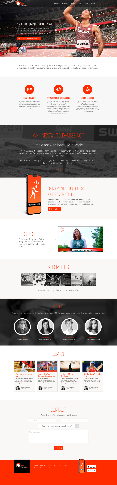

Founding a new enterprise, owner Kara came to us to establish a brand that spoke directly to professional athletes, that promoted her and her teams unique skills as a mental toughness coaches.
Using a stark palette and a big hit of fiery red-orange, we designed an impactful landing page that provided new users to learn about the benefits of her coaching abilities and encouraged visitors to download the Get Psyched app which allowed further engagement and data points in a user friendly way.
